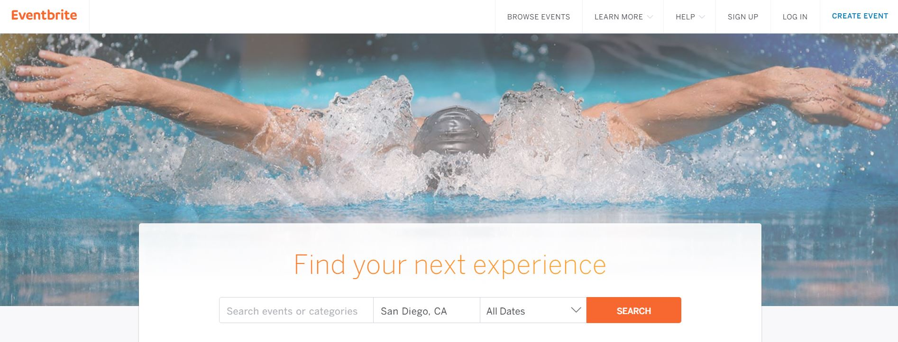
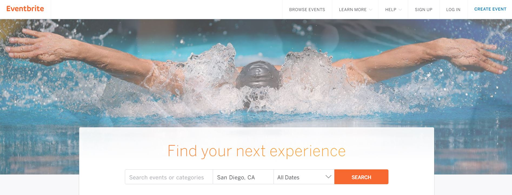
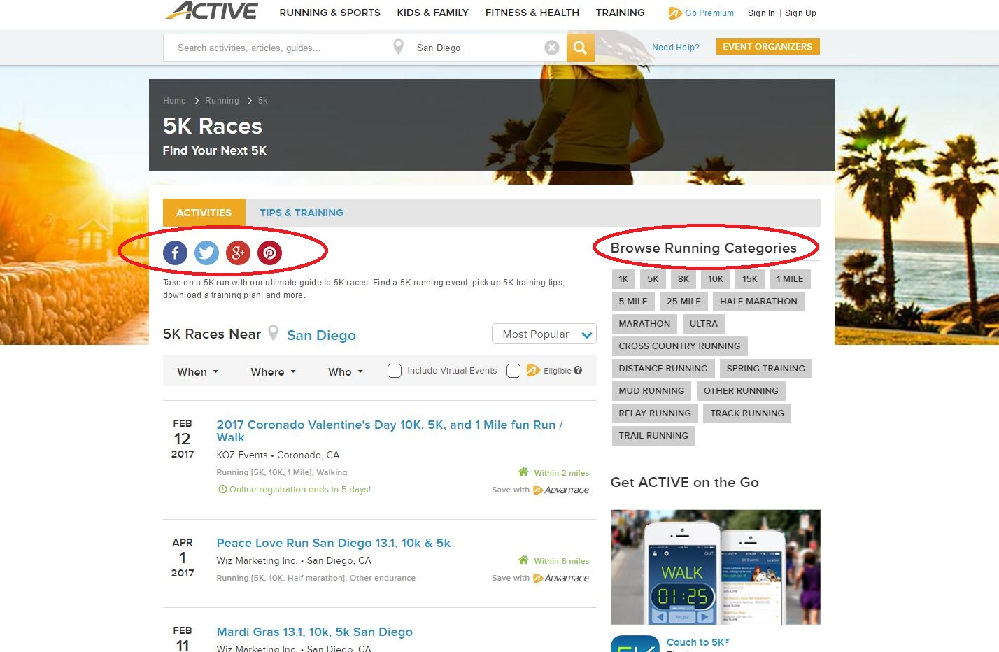
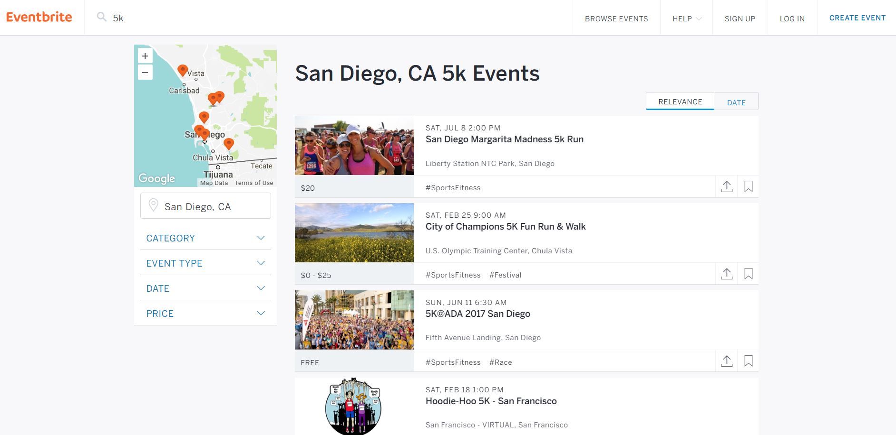
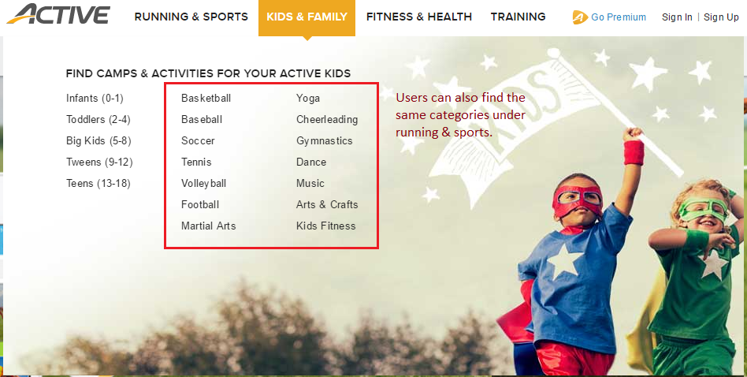

CASE STUDY: ACTIVE.COM
The purpose of this case study is to investigate and improve how users find active events in their areas on Active.com so that we can improve the brand recognition and user experience.
Introduction
Active.com is an online community that gathers people who want to discover, learn, and share events to promote physical and outdoor activities. Millions of active individuals visit Active.com to search and register online for races and events at their nearest locations. They can also connect with those who have similar interests, start online training programs, and access fitness tips. Currently, Active.com works with other organizations to create registration forms for different events, from 5K runs and marathons to cycling races, triathlons, and more. One promising solution that Active.com offers is to help organizers improve their events by easing their registration process, marketing through their large database, and gaining more reputations. The reason why Active.com is so successful is because their website attracts millions active individuals to look for events and sign up for their services.
Although Active.com is widely popular and useful, its user experience and information architecture is designed. It is difficult for users to navigate and find the information they need in order to register for the event they like. The process of searching and registering for different events is tedious and long.
Competitive Analysis
Eventbrite is another website that offer similar services as Active.com. Rather than focusing on one specific category, Eventbrite allows users to look for any events in any categories in their nearest location. The design and information flow of Eventbrite is much better.
Landing page
 

Both of their landing pages have a main search bar that allows users to look for events, but the purpose of Eventbrite’s search bar is much clearer. First, comparing their labels of the search bar, Eventbrite calls it “Find your next experience” while Active.com labels it as “What’s your active”. While it is fun to have a play on words, Active.com violates one of Nielsen’s usability heuristicsmatch between system and the real world, which states the system should speak the users’ language, with words, phrases and concepts familiar to the user. Not all users will understand what “active” means in this context. Second, the search bar on Eventbrite offers more options. Users can search for events or categories and choose the location and the dates on Eventbrite, whereas users cannot choose a date on Active.com.
Result Page
When users search for events, the layout of the result page on Eventbrite is more organized and provides useful information that allows user to easily find events that they like.
Problem: Too cluttered and irrelevant information
The result page seems cluttered and fills with information that is not relevant to the event. The first thing users look at when they see this page are the four social media icons. These four social media icons do not contain any relevant information to the events. They are just meant for advertising and asking users to follow the company’s social media.
Problem: Lack of detailed information
The result is organized by most popular, and users can filter the results by when, where, and who. When deciding which events to participate, there are a few factors that users must know before finding the ones they like. The result should display the name of the event, the date and location, the time, and the amount of fees. However, the results on Active.com do not include the time and fees, which makes it difficult for users to choose the one they like on the first try. Users would have to browse through multiple events and compare first. Thus, the task of finding an event that users are interested in require too many clicks, time and researches.
The result page on Eventbrite is much simpler and easier to navigate around. Users can filter the results on the left hand side by category, event type, date, and price. There is also a map showing where the events are exactly since San Diego is a large city. Similar to the “Browse Running Categories” on Active.com, Eventbrite uses hashtags as a way for users to browse similar events, which is more clean and relevant to the topic. There are also options to bookmark and share the events. Overall, the design on Eventbrite is more organized and user-friendly; it provides necessary information and options for the users to complete their tasks.
Usability Issues & Solutions
NAVIGATION BAR
Problem: Under Kids & Family, the activities listed there are the same as the ones listed under Running & Sports. This category does not clearly show its purpose.
Solution: If there isn’t a clear reason as to why Kids & Family is needed, we can remove this section from the navigation bar. Another solution is to remove the sports section from kids & family category and add some family events like camping trips.
EVENT PAGE

Problem: This event page has multiple register now buttons that lead to the same registration form, which is redundant and ruins the minimalistic design. The ad to join their premium plan is also distracting.
Solution: One or two register now buttons are enough for users as long as they are placed in a visible area. It is convenient if there is one at the top and bottom of the page.
REGISTRATION FORM

Problem: Users cannot register for more than one event, or for multiple people at once.
Solution: Add a feature that allows users to register for multiple events and people at once so users do not have to browse the same event and enter the same billing information twice. This experience should be similar to shopping online, where users can add more than one item in the cart and the total price will change accordingly.
DETAILS ABOUT THE EVENT

Problem: To read more about the events, there is a large amount of unorganized text. It is difficult for readers to find the information they need.
Solution: Have a designated section for event details. Typography is important in this section. For example, highlight the important words and have organized white spacing. Be consistent with every event.